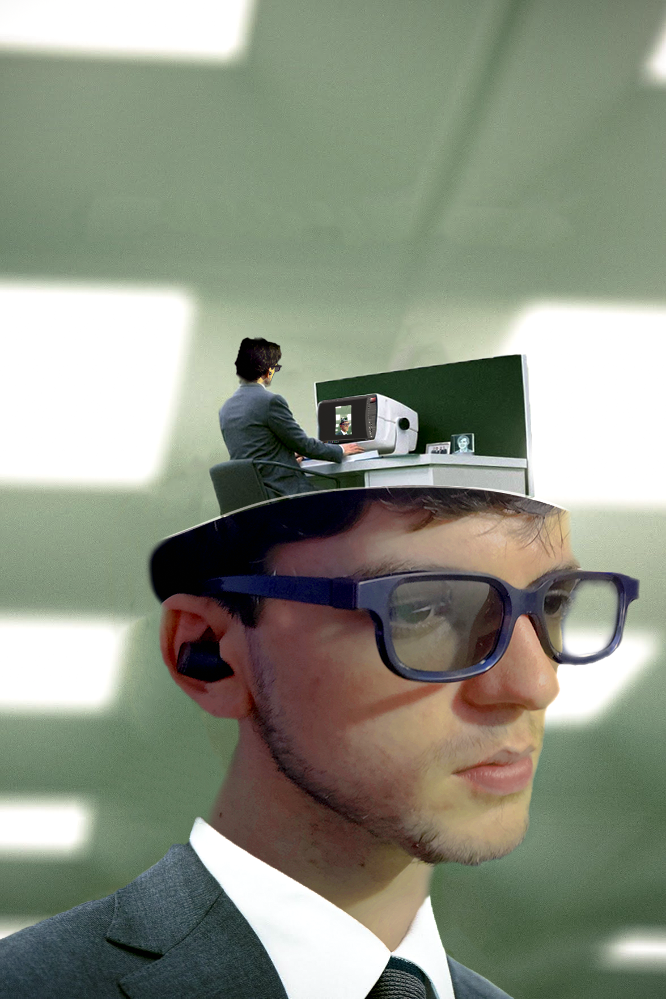

My Projects
Short Film: Laugh Track
This was the first short film I ever directed with a full team under my belt, as well as the first time I ever wrote a script. It was a great learning experience and I'm proud of the final product.
Short Film: Hatchet House
This was an animated short video I made for my literature class in Freshman year of college. It was my first full animated product and it taught me a lot about the process of animation.
Project Title 3
This was a digital rendering I did in a digital media class in highschool. It taught me about camera animation, lighting, and rendering in 3DS Max.

Inspiration Project: Severance
This was a fun self-guided project I chose to do independently to learn photoshop.
Morning Announcements: Big Bang Theory
This was a morning announcement video I made for my highschool which recreated the Big Bang Theory intro, and it taught me how to use After Effects.
Morning Announcements: Monsters Inc
This was another school morning announcement video that mimicked the monsters inc intro, and taught me adobe animate.
Morning Announcements: LTT
This was another announcement video that helped improved my adobe animate skills.
Short Film: Halloween Film Fest
This was a short film I did with a friend for Halloween.